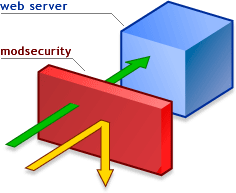

Mise en place de services de sécurité fail2ban et Apache mode security pour LCS.
Fail2ban lit les fichiers de log du système et bannit les adresses IP qui ont obtenu un trop grand nombre d'échecs lors de l'authentification. Il met à jour les règles du pare-feu pour rejeter cette adresse IP. Fail2ban sur LCS prend en compte les fichiers de log : LCS, Apache, sshd... Sur LCS, le module de sécurité Fail2Ban, est activé (et n'est pas désactivable) lors de l'installation du paquet lcs-security.
Le module Security est une sorte de firewall pour Apache qui apporte une solution aux problèmes de sécurité et d’attaques applicatives web. Pour faire simple ce module bloque les requêtes pouvant être dangereuses.
A partir du menu d'administration LCS, vous pouvez dans l'onglet sécurité, activer ou désactiver ce module. Une fois activé, le module apache sécurité met en place une série de règles de sécurité pour le serveur web apache LCS. Attention, ces règles peuvent entrainer une charge plus importante du serveur !